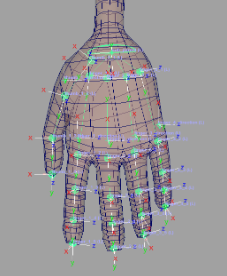

Creates cartoon fingers with control over the number of fingers and
each finger joints count.
Guides:
- 'Sub Parent'
- Helps move all the guides together. This guide's position is not used by the
rig.
- 'Aim Guides'
- Each finger joints positions, starting at the metacarpal and ending at the
fingertip.
- 'Direction
guides' - If the attribute 'Along Direction Guide'
is checked, the finger zeroed pose will align it along this guide's orientations.

Attributes:
- 'Single Side
Guide' - For some Aim
Guides, the 'side_vector' (twist) is locked and driven by a single 'side_vector',
which keeps the orientation consistent. Uncheck this attribute to unlock them if you need more control
over the twist. Re-template is required when changes are made. [Video]
- 'Ctrls
Scale' - Scale all the node ctrls. Note that the
attachments 'Ctrls
Settings' and 'CtrlsShape' will override
this. [Video]
- 'Clean
Transformations' - If checked, the zeroed
pose will be the same as the bind pose;
if unchecked, when zeroing the ctrls, they will align with a world axis specified in the following two
attributes. [Video]
- 'Along Direction
Guide' - When checked, the zeroed pose of the fingers will be along the
orientations of the direction
guides. [Video]
- 'World
Orientation' - The world axis the ctrls will align with when zeroed.
Usually, this attribute's default value is the correct value. [Video]
- 'Expose
RotateOrder' - Exposes all the ctrls 'RotateOrder' attribute in the Channel Box. [Video]
- 'Fingers
Count' - The number of fingers to create (default is 4).
- 'Fingers Jnts
Count' - Number of joints/guides per finger (default is 5); includes metacarpal
joint.
- 'Thumbs Count' -
The number of thumbs to create (default is 1). Thumbs behave differently than fingers.
- 'Thumbs Jnts
Count' - Number of joints/guides per thumb (default is 4).
- 'Ctrls Translate' - If checked, animators
will also be able to translate the FK ctrls.
- 'Scale Fix Jnts' - Add extra skinning
joints that do not scale with their ctrl, this prevents scaling vertices behind the joint in the wrong
direction.
- 'Master
Ctrl' - Create a master control that animates all the fingers when
rotated and scaled.
- 'Master Ctrl Offset' - Position offset of the 'master_ctrl'.
Connections:
- 'Root Input' - Drives all the fingers/thumbs.
- 'Root Output' - Output at 'Root Input'
_____________________________________________
Get Arise at: https://www.ariserigging.com